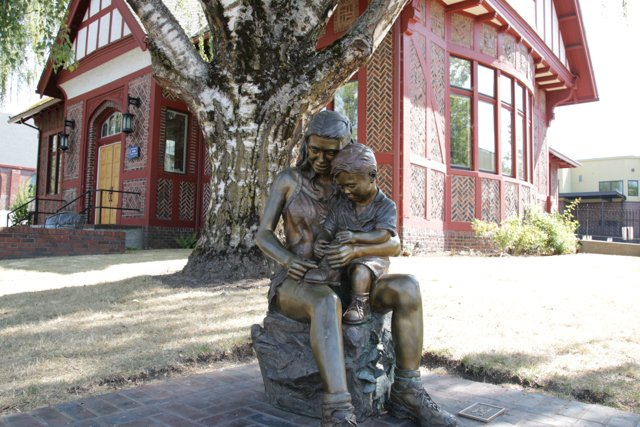
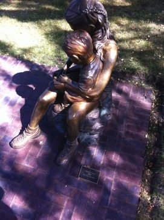

Family Ties

Gresham Outdoor Public Art stepped forth to financially help the Gresham Museum install a beautiful brick paver base for the statue “Family Ties” by Rip Caswell. The museum had purchased the statue several years before. Gresham Outdoor Public Art also purchased a plaque to commemorate the artist.
This piece symbolizes the importance of family and the helpful spirit of children. As a young girl helps her little brother tie his shoes, this bronze sculpture illustrates the bond that is so precious between siblings.
Learn more at: http://www.caswellsculptures.com/bronze-sculptures/boy-and-girl.cfm

Family Ties with Plaque
Close up of Family Ties
Artist: Rip Caswell
“Accomplished sculptor, Rip Caswell, is popular with private and corporate collectors worldwide. He has created more than 200 sculptures of various subjects in contemporary and realistic styles.
“An authority in wildlife art, Caswell’s collectibles are credited to his deep understanding of living creatures – human and animal – in their natural environment. His sculptures have a life and breath of their own.
“Caswell often serves as a judge in competitions and presents at seminars. Many art galleries, publications and television broadcasts also have featured his works.”
Learn more at: http://www.caswellsculptures.com/
Here is a video of Rip Caswell in action!